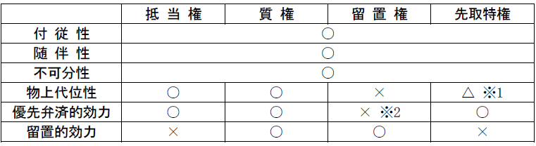

第３編 担保物権
第１章 担保物権総論
担保物権：目的物を債権の担保に供することを目的とする物権
担保制度には、物的担保と人的担保の２種がある。
人的担保：債権を人によって担保するもので、債務者以外の第三者に債務を負わせ、その第三者からも弁済を受けられるようにする方法
ex. 保証債務、連帯債務
物的担保：債権を物・権利により担保する方法で、債務者又は第三者の財産の上に物権を成立させ、債務の弁済がないときは、その財産から優先的に弁済を得るようにしておく制度
ex. 抵当権、質権
一般に、人的担保は、変動しやすい人的信用に依存するものであるので、弁済が確実とは限らないのに対し、物的担保は確実性に富む物的信用によるものであり、担保としての確実性が高いといわれる。
1. 担保物権の種類
(1) 民法の定める担保物権
(a) 留置権
：他人の物の占有者が、その物に関して生じた債権を有するときに、その債権の弁済を受けるまで、その物を留置できる権利（295条）
(b) 先取特権
：法律の定める一定の債権を有する者が、債務者の一般又は特定の財産について、他の債権者に先立って自己の債権の弁済を受ける権利（303条）
(c) 質権
：債権の担保として、債務者又は第三者から受け取った物を占有し、かつ、その物について他の債権者に先立って自己の債権の弁済を受ける権利（342条）
(d) 抵当権
：債務者又は第三者が占有を移さないで、債権の担保に供した不動産（地上権、永小作権を含む）について、他の債権者に先立って自己の債権の弁済を受ける権利（369条）
(2) 特別法上の担保物権
(a) 仮登記担保
金銭債権を担保するため、債務者に債務の不履行があるときは、債権者に、債務者又は第三者に属する所有権その他の権利の移転等をすることを目的としてされた代物弁済の予約、停止条件付代物弁済契約その他の契約で、その契約による権利について、仮登記又は仮登録のできるものをいう（仮登記担保法１条）。
(b) 商事留置権（商法31条、同法521条、同法557条）
(c) 特別法の認める抵当権（工場抵当法）等
(3) 非典型担保
(a) 譲渡担保
融資時に、担保に供する権利（特に所有権）を、債務者が債権者に移転し、債務弁済後に、その権利が債務者に返還されるという形式をとる担保方法である。
(b) 所有権留保
商品の売買代金完済前に、目的物の占有を売主より買主に移転する売買（主に割賦販売）において、代金債権担保のために、目的物の所有権を売主が留保するという担保方法である。
(c) 買戻し（579条）
買戻しとは、売買契約と同時に将来目的物を買い戻す権利を留保する場合をいう。目的物の代金相当額の融資を受けるものであり、経済的には不動産の担保として機能する。
(d) 再売買の予約
売買契約にあたって、売主が予約完結権をもつ再売買の一方の予約をいう。これも担保として機能する。
2. 担保物権の分類―法定担保物権と約定担保物権
(1) 法定担保物権－留置権、先取特権
特殊の原因から生じた債権について、法律上当然に認められる担保物権をいう。
(2) 約定担保物権－質権、抵当権
当事者間の契約によって成立する担保物権をいう。
1. 付従性
：担保物権が被担保債権に付従して存在する態様
債権のないところに担保物権は成立しない。
もっとも、元本確定前の根抵当権の場合には、付従性はない（398条の２第１項）。
2. 随伴性
被担保債権が譲渡・質入されたときには、担保物権も、これに伴い移転し、又は質権に服する。
もっとも、元本確定前の根抵当権の場合には、随伴性はない（398条の２第１項）。
3. 不可分性
被担保債権の全部の弁済があるまで、目的物の全部の上にその効力が及ぶ。
従って、担保権者は、債権の一部につき弁済を受けても、全部の弁済を受けるまでは目的物の全部を留置したり、全部を差し押さえて競売したりすることができる（296条、305条、350条、372条）。
4. 物上代位性
先取特権、質権、抵当権は（非典型担保も同様）、目的物が滅失・損傷して保険金、損害賠償請求権などに変じ、収用されて補償金に変じ、売却されて代金に変じ、賃貸されて賃料などに変じたときは、これらの保険金、損害賠償請求権、補償金、売買代金、賃借料などの上に効力が及ぶ（304条、350条、372条）。
1. 優先弁済的効力
：目的物を換価し、他の債権者に先立って、自己の債権の弁済を受ける権利
先取特権（303条）、質権（342条）、抵当権（369条１項）には認められるが、留置権においては認められない。
※ 競売権
先取特権、質権、抵当権、留置権について明文で認められている（民執法180条、190条、195条）。
仮登記担保、譲渡担保には競売権がないが、処分型のものにおいては目的物の処分権がある。
2. 留置的効力
：目的物を手許に留め置き、債権の弁済があるまで、その引渡しを拒むことができる効力
債務者にとって価値のある物を取り上げ、心理的圧力を加えて、それにより事実上弁済を促すものである。留置権（295条）、質権（347条）に認められる。

※1 特別先取特権○、一般先取特権×
※2 事実上の優先弁済は受ける
被担保債権の消滅により消滅するほか（付従性）、物権一般の消滅原因（目的物の消滅等）により消滅する。
第２章 抵当権
第１節 意義
：債務者又は物上保証人が債務の担保に供した物を、占有を移転せずに設定者の使用収益に委ねておき、債務が弁済されない場合にその物の交換価値から優先弁済を受ける約定担保物権
1. 付従性
①債権が存在しなければ抵当権は成立せず（成立についての付従性）、②債権が消滅すると抵当権も消滅する（消滅についての付従性）。
2. 随伴性
被担保債権が譲渡されると抵当権も当然に譲渡される。
3. 不可分性
被担保債権の全部の弁済を受けるまでは抵当権の効力は目的物の全部に及ぶ（372条、296条）。
4. 物上代位性
抵当権は、抵当目的物の売却・賃貸・滅失・損傷によって債務者が受けるべき金銭その他の物（代償物・代位物）に対してもその効力を及ぼすことができる（372条、304条）。
第２節 設定
抵当権設定契約により設定される（諾成契約）。
1. 抵当権者
被担保債権の債権者に限られる。
2. 抵当権設定者
債務者に限らず第三者でもよい（369条１項）。この第三者を物上保証人という。
1. 抵当権の目的となり得る物
(1) 民法上認められる物
不動産（369条１項）、地上権、永小作権（369条２項）
(2) 特別法上認められる物
自動車・航空機・立木・農業用動産等
2. 特定性・独立性との関係
(1) 一筆の土地の一部
独立して物権の客体となり得る。ただし、登記をするには分筆が必要である。
(2) 共有不動産の持分
共有不動産の持分上に抵当権を設定することはできるが、持分の割合的な一部分に設定することは、目的物の特定が不可能なことから、登記実務上は否定されている。
(3) 未完成の建物
未完成建物に抵当権を設定しても債権的効果を生じさせるにすぎず、建物となった後に改めて設定契約をしなければ物権的効果を生じさせることはできない（実務）。
1. 被担保債権の種類
被担保債権は金銭債権に限らない。なぜなら、金銭債権以外の債権であっても、債務不履行の場合には金銭債権である損害賠償請求権となるからである。
2. 付従性との関係
期限付債権・条件付債権のような、将来発生する債権のために抵当権を設定することが認められていること、及び転抵当が認められていることから、抵当権の成立・存続においては付従性が緩和されている。
(1) 成立に関する付従性
(a) 債権が無効な場合
被担保債権が無効な場合、設定された抵当権も無効となる（公序良俗違反につき大判昭８.３.29、利息制限法上の制限利息超過部分につき最判昭30.７.15）。
(b) 将来発生する債権
将来発生する債権を被担保債権とする抵当権の設定は、「付従性」に反することから認められないとも思える。しかし、判例・通説は付従性を緩和するという方向で、将来発生する債権のために現在において抵当権を設定することができるとしている（大判昭７.６.１）。
(2) 消滅に関する付従性
被担保債権が消滅すると抵当権も消滅するということである。
被担保債権の一部が消滅した場合は、抵当権の担保の範囲もその限度で当然に縮減する。これは、抵当権の債権額の変更登記をしなくても、当該抵当権付き債権の譲受人に対抗することができる（大判大９.１.29）。
抵当権は登記を対抗要件とする（177条、不登法３条７号）。
第３節 抵当権の効力
Ⅰ 効力が及ぶ範囲
抵当権は優先弁済的効力を有する。
なお、留置的効力・収益的効力は認められない。
1. 意義
担保されるのは、①元本、②利息、③定期金、④遅延損害金、⑤違約金、⑥抵当権実行の費用である。
抵当権者は、利息その他の定期金を請求する権利を有するときは、その満期となった最後の2年分についてのみ、その抵当権を行使することができる（375条１項本文）。
2. 趣旨
抵当権は質権と異なり目的物を設定者が占有するため、抵当権設定後も後順位抵当権が設定されたり一般債権者が目的物を差し押さえるなど、第三者が利害関係をもつ可能性が高い。そこで、これらの利害関係人を保護するため、第三者との関係において抵当権の被担保債権の範囲を制限しているものである。
3. 「満期となった最後の2年分」（375条1項）の範囲
弁済期にかかわりなく、配当の時から算出して既に経過した過去２年分と解する（名古屋高判昭33.４.15・通説）。
4. 375条の適用範囲
本条は、後順位抵当権者・一般債権者の利益を考慮したものであるから、物上保証人、債務者などの抵当権設定者及び目的物の第三取得者との関係については適用がなく、被担保債権の範囲は制限されない（大判昭９.10.10）。
1. 意義
抵当権は、抵当地の上に存する建物を除き、その目的である不動産（抵当不動産）に付加して一体となっている物に及ぶ（370条本文）。
370条は、抵当権の目的不動産の付加一体物について抵当権の効力が及ぶ旨を定めている。
ただし、 以下の場合には、付加一体物であっても抵当権の効力は及ばないとされる。
① 「権原」（242条ただし書）により他人が附属させた物
② 設定行為における当事者の契約で効力が及ばないとした物（370条ただし書）
③ 付加行為が詐害行為（424条）となる場合（370条ただし書）
2. 「付加して一体となっている物」
(1) 付合物（242条本文）
抵当不動産に付合した物（242条本文）は不動産の構成部分となって独立性を失っているから、付合時期が抵当権設定前であるか後であるかに関わらず付加一体物（370条）に当然に含まれ、抵当権の効力が及ぶ。
ex.雨戸、石垣、敷石、エレベーター、取り外しできない庭石
土地と建物は別個の不動産であることから、土地に抵当権を設定してもその効力は建物には及ばない。
(2) 従物
(a) 従物は、付加一体物に当たるか。
Ａ 肯定説（経済的一体性説）
抵当権は目的不動産の交換価値を把握するものであるから、付加一体物（370条）とは目的不動産と経済的に一体である物をいい、従物は主物と経済 的に一体である。
Ｂ 否定説（構成部分説）
付加一体物とは、付合物のみを指し、物として独立性を有する「従物」はこれに含まれない。
※ Ｂ説によっても抵当権設定時の従物については、87条２項により抵当権の効力が及ぶとされる（大連判大８.３.15）。
(b) 抵当権設定後の従物に抵当権の効力が及ぶか。
Ａ 経済的一体性説
抵当権設定後の従物も目的物と経済的に一体であることに変わりがなく、370条により抵当権の効力が及ぶ。
Ｂ 構成部分説
「処分」の捉え方と関連して問題となる。
B1 肯定説（客観的・経済的結合説）
87条２項の「処分」は、抵当権設定行為のみならず、その後の抵当権実行までの一体としての態様を意味する。
87条２項は主物と従物が経済的・客観的に一体であることから「従物は、主物の処分に従う」ことを規定したものである。
B2 否定説（意思解釈説）
87条２項の「処分」は、抵当権設定行為のみをいう。
87条２項は、処分の際の当事者の意思解釈に基づく規定である。従って、抵当権設定当時の従物には当事者の意思解釈として抵当権の効力が及ぶが、抵当権設定後の従物には及ばない。
(3) 従たる権利
従物に準じて抵当権の効力が及ぶ。
借地上の建物に抵当権を設定した場合には、建物が存在する前提となっている地上権・土地賃借権などの敷地利用権にも抵当権の効力が及ぶ（最判昭40.５.４）。
賃貸借が合意解約されてもこれをもって買受人に対抗できない（大判大11.11.24）。
ただし、競落人が敷地利用権を土地賃貸人に対抗するためには、賃貸人の承諾（612条）又はこれに代わる裁判所の許可が必要である（借地借家法20条）。
(4) 分離物
抵当不動産上の付加一体物を分離・搬出した場合、分離物に抵当権の効力が及ぶか。
(a) 抵当権の競売開始決定前
抵当権は設定者から用益権を奪わないことに特性がある。そこで、通常の使用収益の範囲内での分離・搬出物には抵当権の効力は及ばない。問題は、通常の使用収益の範囲を超える場合である。
ⅰ 分離物が抵当不動産上にある場合
Ａ 肯定説（大判昭７.４.20）
（理由）
抵当権は付加物を含めた抵当不動産全体の価値を把握する物権である。
Ｂ 否定説
（理由）
分離されることで不動産の性格を失い、動産となり、独立の所有権の対象となる。
ⅱ 分離物が抵当不動産上から搬出された場合
Ｑ 抵当不動産上の分離物に抵当権の効力が及ぶとしても、分離物が抵当不動産から搬出されても抵当権の効力は及ぶか。
Ａ 対抗力喪失説
抵当権は、付加物を含めて目的物全部を支配する物権であるので分離物にも支配力が及ぶ。そこで、搬出後であっても債務者・設定者が所有している場合には抵当権の効力が及ぶ。しかし、登記を対抗要件とする権利であることから、分離物が抵当不動産上に存在し、登記による公示の衣裳に包まれている限りにおいて第三者対抗力を有するにとどまる。そこで、搬出されれば、第三者には対抗できなくなる。
Ｂ 即時取得基準説
搬出後であっても、第三者が即時取得（192条）しない限り抵当権の効力は及ぶ。
なぜなら、悪意の第三者は排除した上で、抵当権の効力を可能な限り認めるべきであるからである。
(b) 抵当権の競売開始決定後
競売手続の開始によって差押えの効力が生じるので、競売開始決定後に分離・搬出した付加物には抵当権の効力が及ぶ（大判大５.５.31）。
(c) 建物が崩壊して木材となった場合
この場合、木材は不動産としての性質を失い、動産となったのだから抵当権は消滅するのが原則である（大判大５.６.28）。
もっとも、判例は抵当権の実行に着手した後の崩壊木材には抵当権の効力が及ぶとする（大判大６.１.22）。
3. 「果実」（371条）
抵当権は、その被担保債権に不履行があった後に生じた「果実」にその効力が及ぶ（371条）。
また、抵当権者の申立てにより裁判所が選任する管理人が、賃料取立て・契約解除・果実収取などをするという、担保不動産収益執行の制度が導入されている。
これにより、抵当不動産から得られる「果実」に対する抵当権者の権利行使が可能となっている。
さらに、法定果実については、従来より交換価値のなし崩しとして、物上代位（372条、304条）をすることができるとされている（通説・最判平元.10.27）。